Week 6
Tuesday
✦ Virtual environments
A virtual environment is a well-defined room for all your tools, like a sandbox.
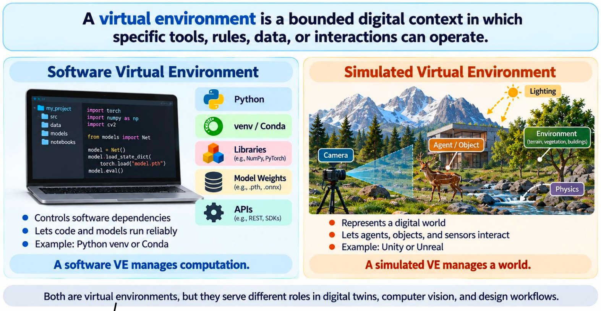
- Software: some software comes with a requirements file (such as
requirements.txt), so you need to install everything it lists.
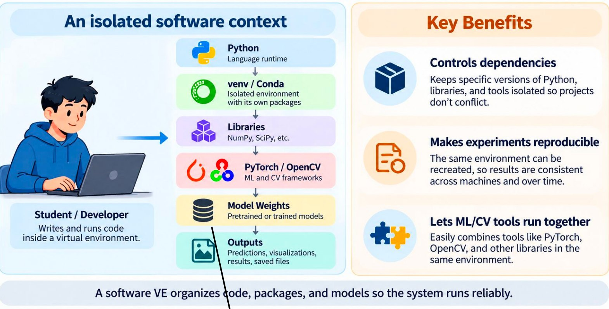
- Worth a closer look: the outputs stage (predictions, visualizations, saved files).
✦ From pose to animation
AI animation: whatever you do, the animated character does exactly the same.
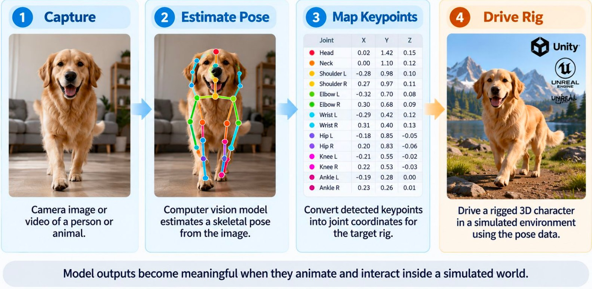
✦ Setting up Unity with the agent
We also installed Unity in class, then asked the agent to inspect the Unity project and integrate the starter files into it.
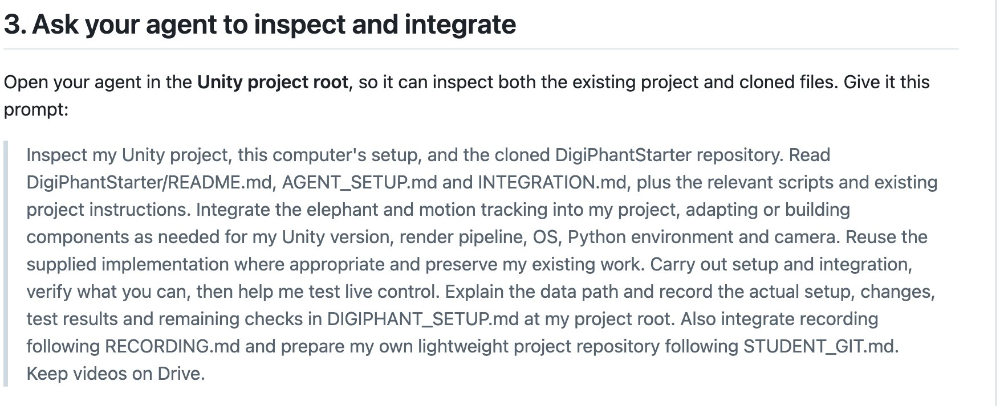
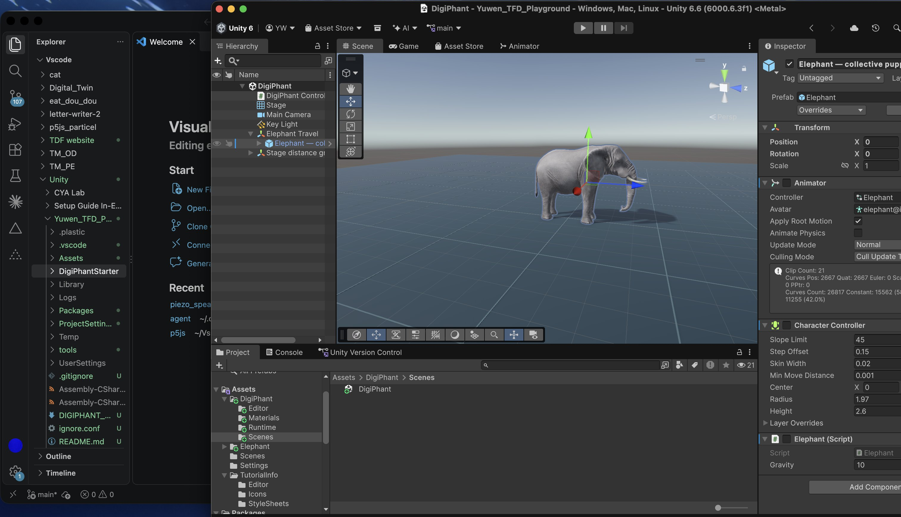
✦ MediaPipe experiments
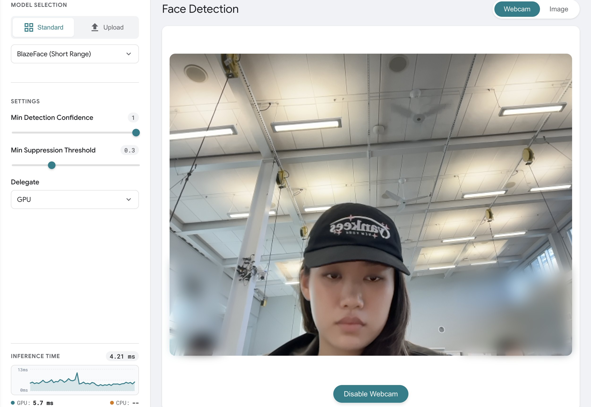
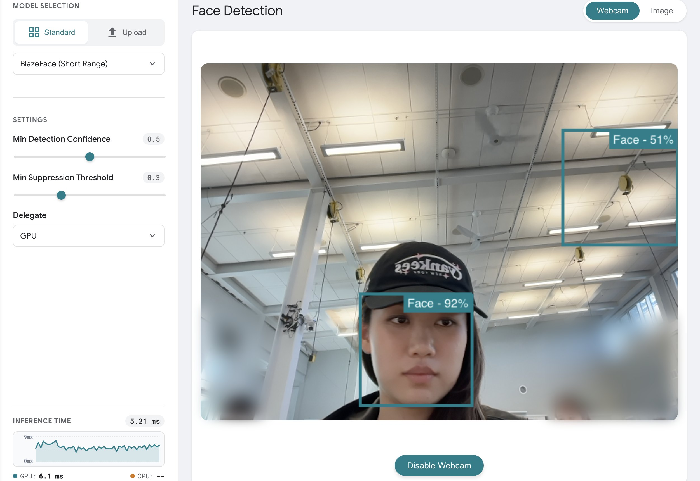
A threshold of 1 rejects everything, because a model is never 100% confident. Lowering it to 0.5 finds my face, but also lets in a false positive. Inference can run on either the CPU or the GPU.
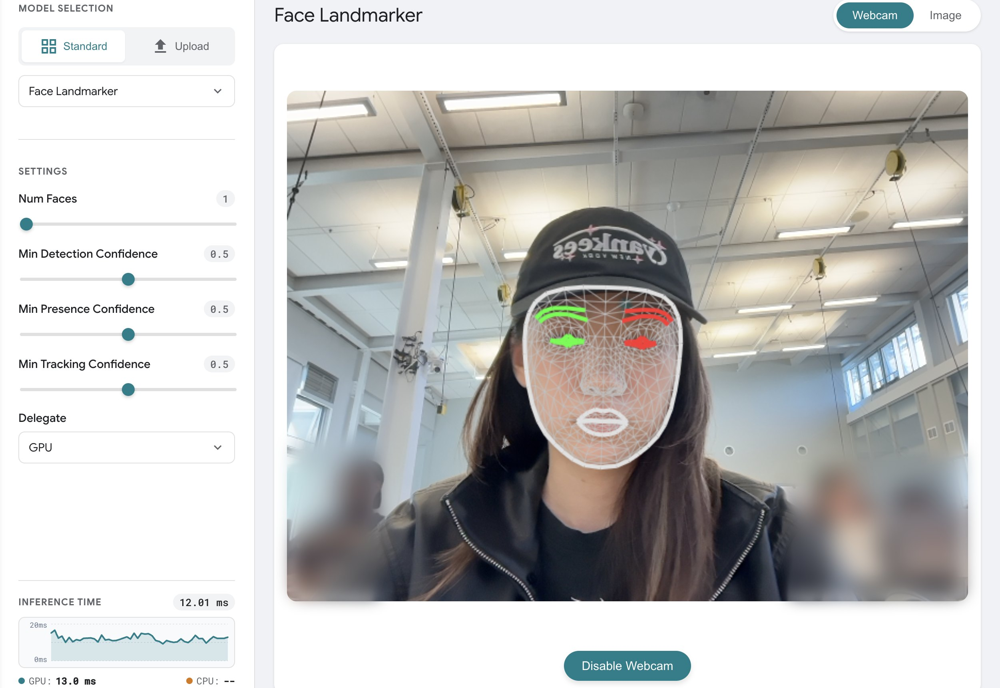
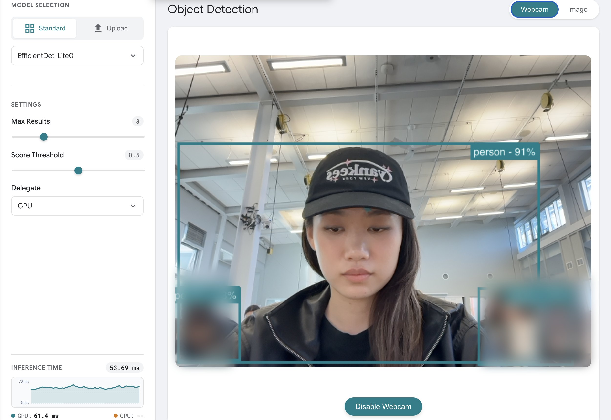
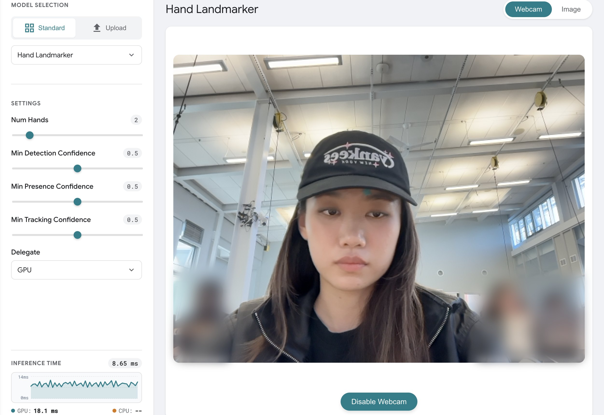
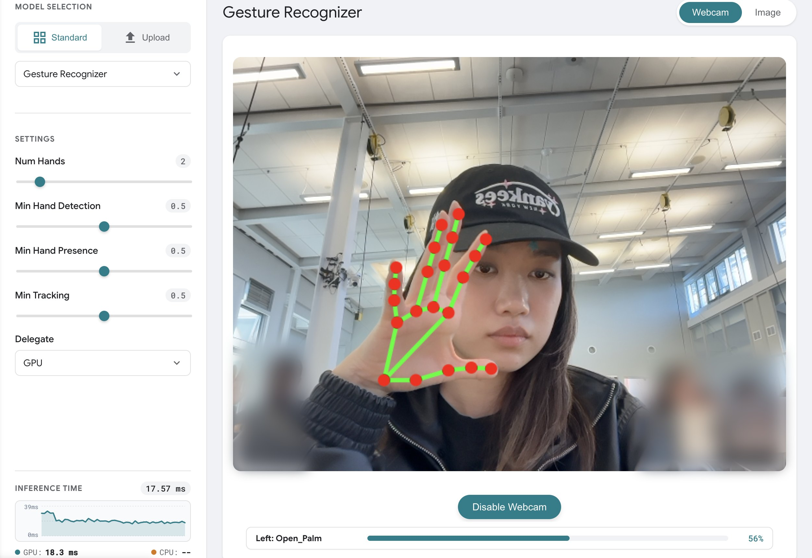
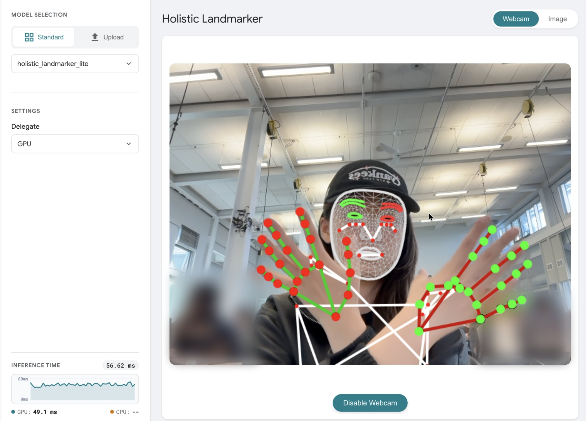
What are the advantages and disadvantages of each model? One clue from my own runs: models that track more at once tend to be slower, but the architecture matters too. The two slowest were the general Object Detector and the Holistic Landmarker, which tracks face, body, and both hands at once.
| Model | Output | Inference time |
|---|---|---|
| Face Detector | Face boxes | ≈ 5 ms |
| Hand Landmarker | Hand keypoints | 8.7 ms* |
| Face Landmarker | Full face mesh | 12.0 ms |
| Gesture Recognizer | Hand keypoints + gesture label | 17.6 ms |
| Object Detector | Labeled boxes for common object classes | 53.7 ms |
| Holistic Landmarker | Face, body, and both hands together | 56.6 ms |
All runs used the GPU in the browser demo. Times are the “Inference time” readings in my screenshots (Face Detector averages two runs). *No hand was in frame.
✦ Deploying MediaPipe
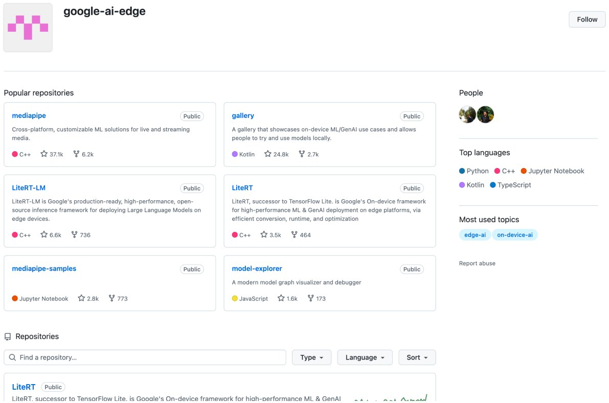
- MediaPipe can be deployed alongside other applications on a Raspberry Pi and similar devices.
- The source code and samples are in the google-ai-edge GitHub repositories.
✦ Reflection
- Once the Unity project files are in a folder the AI can access, the agent can help me work inside Unity too. I think the same approach could work just as well for other, similar practice.
- I also realized how important it is to really keep the agent in a sandbox, the same idea as the virtual environments at the start of the session.